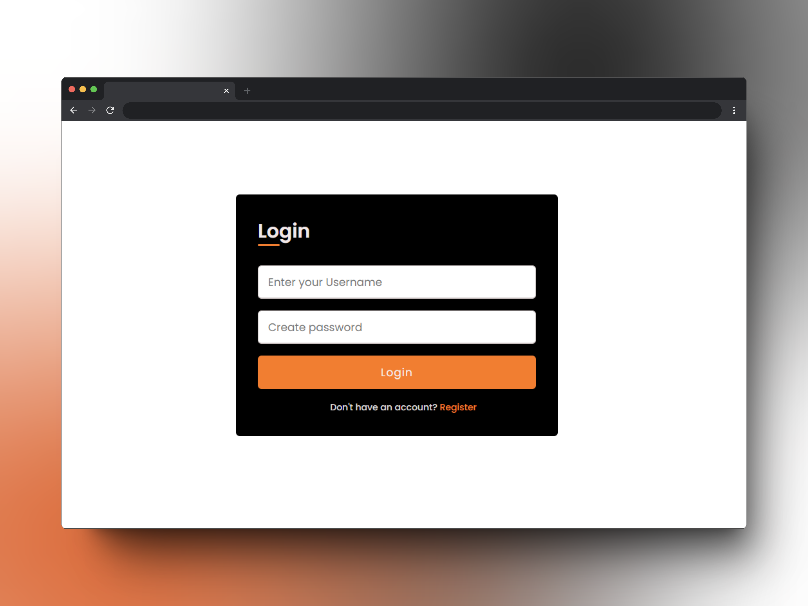
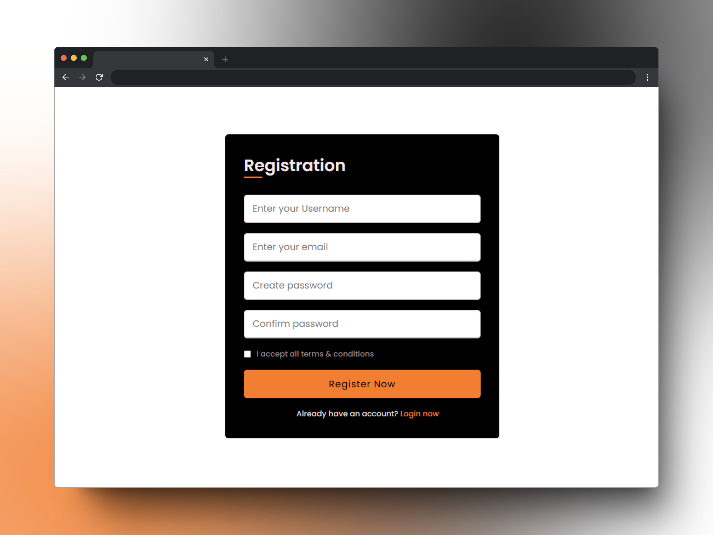
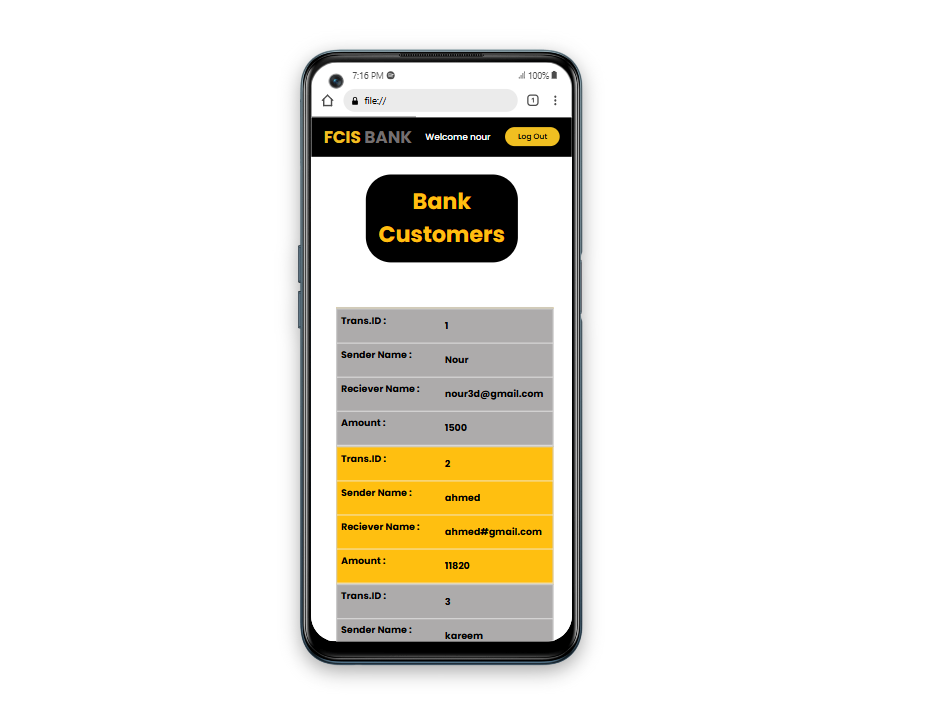
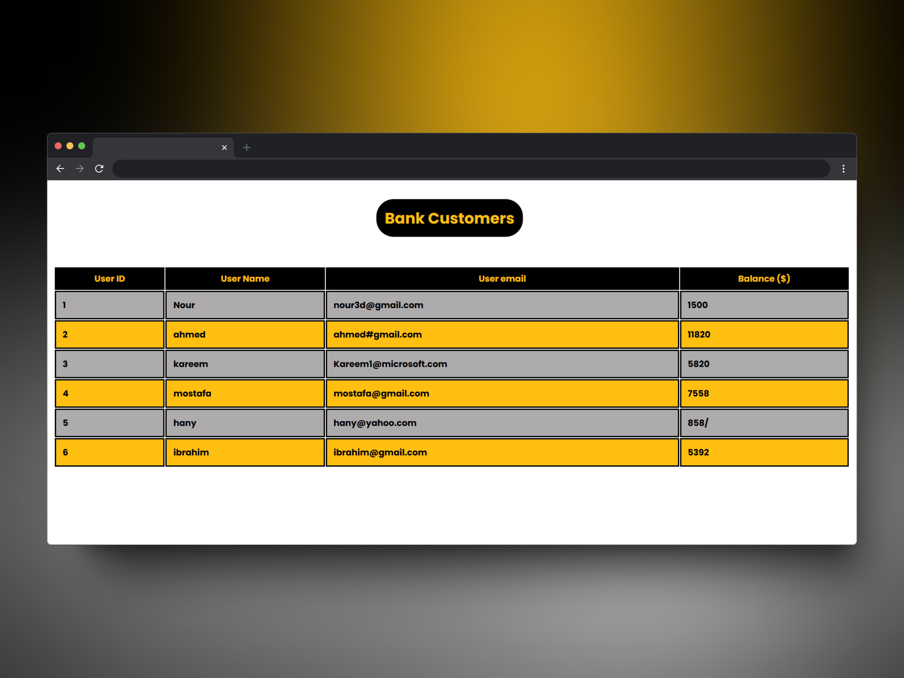
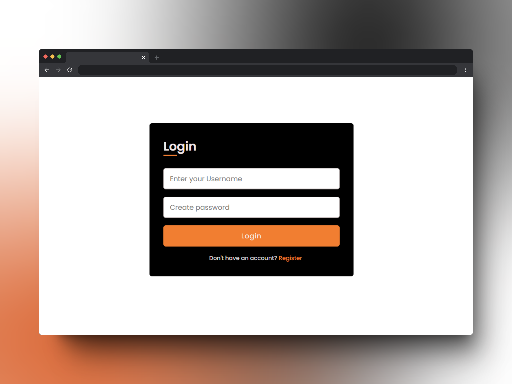
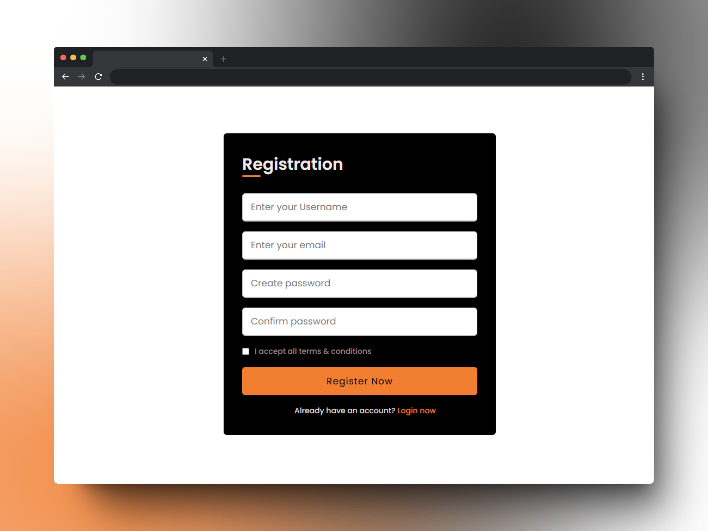
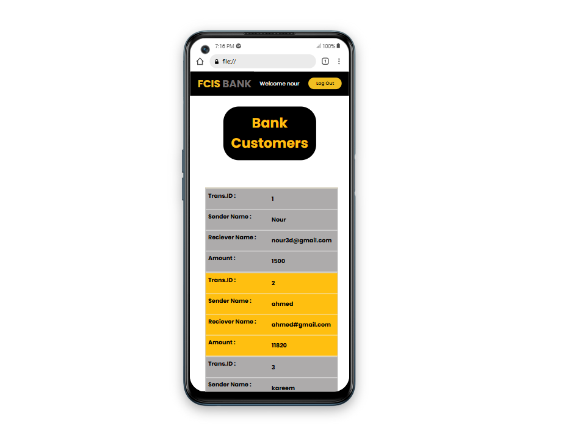
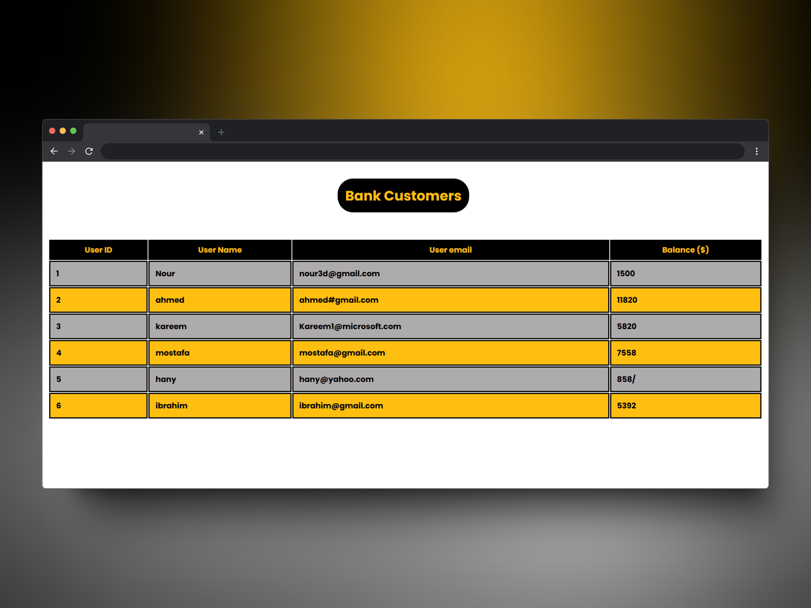
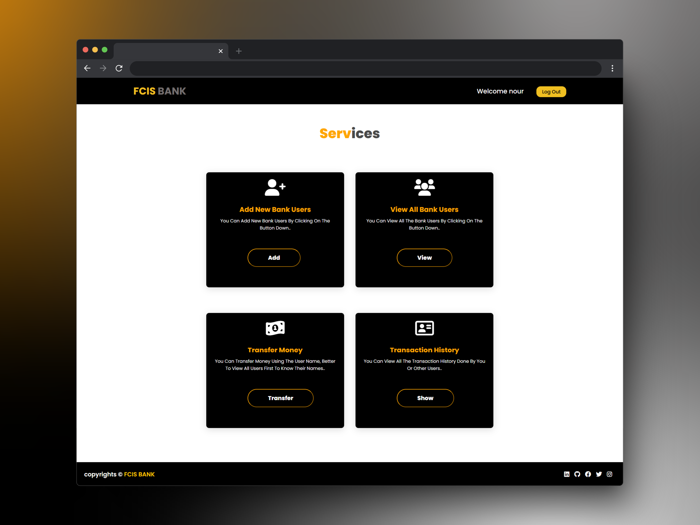
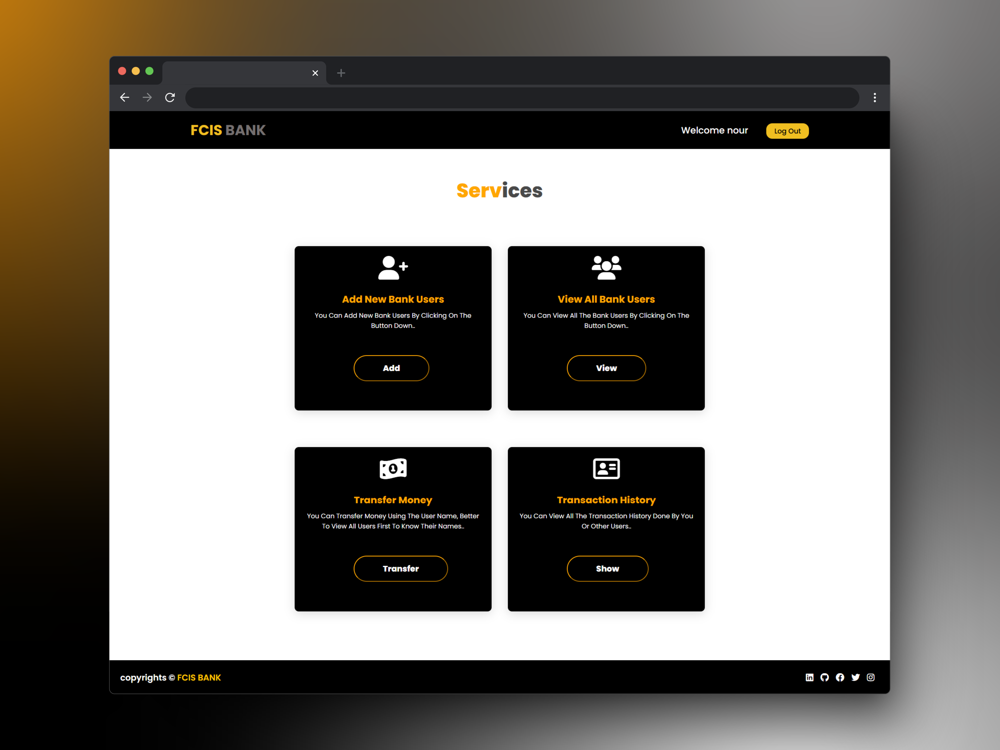

Local Bank
A simple local bank website allows users to transfer money, view transaction history, add new bank users, and view all existing bank users.
The Local Bank project is part of my internship with The Sparks Foundation's Web Developer Track and serves as a project for my summer training in web development at the Faculty of Computer Science, Ain Shams University.
The Local Bank app includes a range of features designed to manage user accounts and transactions. It has pages for login and registration, allowing users to access and create accounts. Users can view a list of all bank users and add new ones as needed. The app also supports money transfers between users and provides a transaction history page to track past transactions for each user.
The Local Bank app was developed using a range of tools to ensure a robust and user-friendly experience. The front-end was built with HTML, CSS, and JavaScript, enhanced with Bootstrap for responsive design and ease of use. For the back-end, we used PHP to handle server-side logic and MySQL for database management.
 







 
